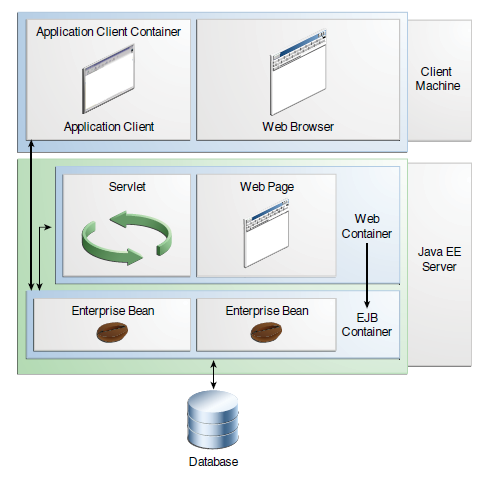
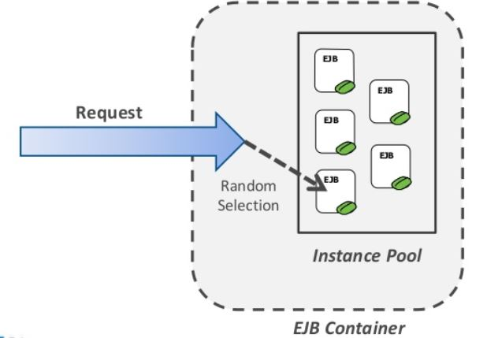
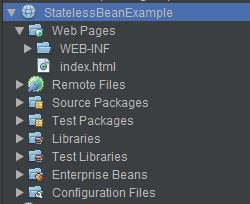
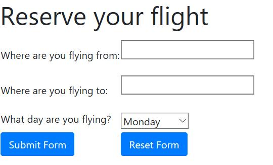
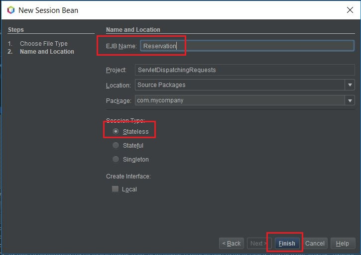
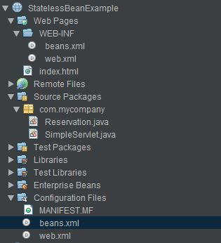
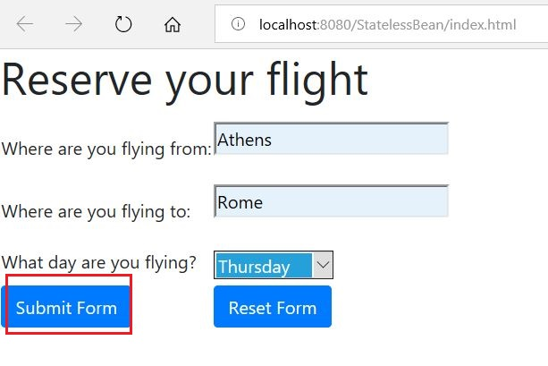
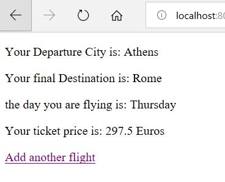

Από την σημερινή δωρεάν ενότητα Java EE, θα αρχίσουμε
την ανάλυση μας σε πιο εξειδικευμένες τεχνολογίες ανάπτυξης
enterprise εφαρμογών. Αν και τα Servlets είναι μέρος αυτών των
τεχνολογιών, οι προγραμματιστές δεν τα χρησιμοποιούν πλέον γιατί
θεωρούνται ξεπερασμένα. Στα δικά μας παραδείγματα όμως θα τα
δούμε πολύ συχνά να παίζουν τον ρόλο του client και να καλούν
μεθόδους από τις υπόλοιπες κλάσεις της εφαρμογής. Θα φτάσουμε
όμως εκεί. Για να μπορέσουμε όμως να μιλήσουμε για τα Enterprise
Java Beans (EJB) θα πρέπει πρώτα να κατανοήσουμε καλύτερα
την έννοια του Application Server.
Το JAVA EE μοντέλο έχει δημιουργηθεί κατά τέτοιο τρόπο ώστε
να μπορούμε να δημιουργήσουμε εφαρμογές για πελάτες, συνεργάτες,
προμηθευτές και οποιονδήποτε άλλο χρειάζεται πρόσβαση σε στοιχεία
της εφαρμογής. Τέτοιου είδους εφαρμογές είναι πολύπλοκες γιατί η
πρόσβαση στην βάση δεδομένων γίνεται με πολλαπλούς τρόπους ενώ ταυτόχρονα
τα δεδομένα πρέπει να τα μοιράσουμε σε πολλαπλούς και διαφορετικούς
clients. Για να μπορέσουμε λοιπόν να έχουμε όσο το δυνατόν καλύτερο
έλεγχο γίνεται, ανάμεσα στον client (εκείνον που κάνει το αίτημα)
και στα δεδομένα, δημιουργήσαμε ένα ακόμα επίπεδο που το ονομάσαμε
middle layer. Πρακτικά το middle layer είναι ο Payara Server που,
αφού έχει υιοθετήσει όλα τα επίσημα standards της Java EE, μπορεί
να προσφέρει υπηρεσίες επεκτασιμότητας,, πρόσβασης και διαχείρισης
υπηρεσιών τις οποίες χρειάζεται η enterprise εφαρμογή μας για να
λειτουργήσει σωστά και με ασφάλεια. Ο σκοπός που προσφέρονται αυτές
οι υπηρεσίες (και πολλές ακόμα που δεν έχουμε αναφέρει) είναι γιατί
θέλουμε τον προγραμματιστή να συγκεντρωθεί στο να γράψει την λογική
της εφαρμογής και όχι αναπτύσσει και τα services που χρειάζεται η
εφαρμογή. Ωραία λοιπόν, άρα έχουμε έναν application server, που έχει
υλοποιήσει όλα τα standards του Jakarta EE και τα προσφέρει σαν υπηρεσίες.
Πως η εφαρμογή μας μπορεί να κάνει χρήση αυτών των υπηρεσιών?
Εδώ λοιπόν μας εξηγεί η θεωρία ότι η Java εφαρμογή μας θα πρέπει
να έχει πακεταριστεί σαν WAR (που είναι και το πιο συνηθισμένο) ή σαν
EAR για να μπορέσει να την αναγνωρίσει ο Application Server. Εσωτερικά
ο Application Server χωρίζεται σε δύο containers – το EJB Container
και το Web Container.
Το Web container διαχειρίζεται κώδικα και αρχεία HTML,
Servlets, JSP, JSF και γενικότερα οτιδήποτε έχει να κάνει με
ιστοσελίδες στο Web. Ένας τέτοιος απλός Web Server είναι ο Tomcat.
To EJB container διαχειρίζεται όλα τα enterprise beans
της εφαρμογής όπως Stateless, Stateful, Message και
γενικότερα όλες τις κλάσεις που έχουν μέσα τους την
core λογική της εφαρμογής. Τώρα μπορείτε να δείτε πιο
καθαρά γιατί επιλέξαμε τον Payara Server – γιατί είναι
ένας ολοκληρωμένος server που μας προσφέρει όλες τις υπηρεσίες
που αναγράφονται στα standards της Jakarta EE και περιέχει και
τα δύο containers.
Η πιο κάτω φωτογραφία προέρχεται από το documentation της Oracle
αλλά αντικατοπτρίζει πλήρως την εικόνα των containers
μέσα σε έναν application server.

Επίσης η εικόνα μας δείχνει και την ροή του αιτήματος
– ο πελάτης θα κάνει κάποια επιλογή μέσα από την ιστοσελίδα,
την οποία επιλογή θα καταλάβει το Servlet και θα καλέσει το
κατάλληλο Enterprise Bean να ανταποκριθεί στο αίτημα και να
απαντήσει με την ζητούμενη πληροφορία.
Με βάση τα όσα έχουμε πει μέχρι τώρα, μπορούμε να
καταλάβουμε ότι το business logic της εφαρμογής μας
θα περικλείεται μέσα σε ένα Session Bean. Υπάρχουν
τρία διαφορετικά είδη Session Beans: Stateless Session
Beans, Stateful Session Beans και Singleton Session Beans.
Στην σημερινή ενότητα θα ασχοληθούμε με τα Stateless Session Beans.
Η ιδιότητα που έχει ένα Stateless Session Bean είναι ότι
δεν κρατάει το conversational state με τον client. Όταν ένας
client (όπως π.χ ένα Servlet) καλέσει μια μέθοδο ενός Stateless
EJB, το Stateless Bean θα εκτελέσει το αίτημα και μετά θα ξεχάσει
τον client και κατά συνέπεια το state των μεταβλητών που είχαν
πάρει κάποια τιμή από τον client. Για παράδειγμα, ας υποθέσουμε
ότι το Stateless Bean έχει μια μέθοδο που επιστρέφει το άθροισμα
δύο τιμών. Όταν καλέσει ο client την συγκεκριμένη μέθοδο, θα της
περάσει δύο τιμές και θα λάβει πίσω ένα αποτέλεσμα. Μετά το πέρας
αυτής της εκτέλεσης το Stateless EJB δεν θυμάται τις τιμές που του
είχαν περαστεί αρχικά. Οπότε κάθε αίτημα που γίνεται στην μέθοδο
είναι καινούργιο χωρίς να στηρίζεται σε προηγούμενα αποτελέσματα.
Ο τρόπος που το Stateless EJB το καταφέρνει αυτό, είναι
να διατηρήσει ένα pool από διαθέσιμα αντικείμενα. Κάθε φορά
που γίνεται ένα αίτημα στο Stateless EJB, ο container ελέγχει
ποια αντικείμενα από το pool είναι διαθέσιμα και αφιερώνει ένα
από αυτά να εξυπηρετήσει τον client. Στο επόμενο αίτημα του ίδιου
client μπορεί να είναι το ίδιο αντικείμενο ή διαφορετικό αντικείμενο
που θα είναι διαθέσιμο προς εκτέλεση.

Τα Stateless Beans είναι πολύ γρήγορα στην ανταπόκριση τους προς
τον πελάτη για αυτό και χρησιμοποιούνται και στα Web
services. Ας δούμε όμως ένα παράδειγμα και θα αναλύσουμε
λίγο περισσότερο την λογική και λειτουργία των Stateless EJBs.
Για αρχή, πρέπει να δημιουργήσουμε ένα Web Project και να το ονομάσουμε StatelessBeanExample.

Αντικαθιστούμε τον απλό κώδικα του index.html με τον εξής κώδικα:
index.html
<!DOCTYPE html>
<html>
<head>
<title>Flight Reservation</title>
<meta charset="UTF-8">
<meta name="viewport" content="width=device-width, initial-scale=1.0">
<meta charset="utf-8">
<meta name="viewport" content="width=device-width, initial-scale=1, shrink-to-fit=no">
<link rel="stylesheet" href="https://maxcdn.bootstrapcdn.com/bootstrap/4.0.0/css/bootstrap.min.css"
integrity="sha384-Gn5384xqQ1aoWXA+058RXPxPg6fy4IWvTNh0E263XmFcJlSAwiGgFAW/dAiS6JXm"
crossorigin="anonymous">
</head>
<body>
<h1>Reserve your flight</h1>
<form method="POST" action="SimpleServlet">
<table>
<tr>
<div class="form-group">
<td><label for="dept">Where are you flying from: </label></td>
<td><input type="text" id="dept" name="dept" /><br><br></td>
</div>
</tr>
<tr>
<div class="form-group">
<td><label for="dest">Where are you flying to: </label></td>
<td><input type="text" id="dest" name="dest" /><br><br></td>
</div>
</tr>
<tr>
<div class="form-group">
<td><label for="myday">What day are you flying? </label></td>
<td><select id="myday" name="myday">
<option value="Monday">Monday</option>
<option value="Tuesday">Tuesday</option>
<option value="Wednesday">Wednesday</option>
<option value="Thursday">Thursday</option>
<option value="Friday">Friday</option>
<option value="Saturday">Saturday</option>
<option value="Sunday">Sunday</option> </td>
</select>
</div>
</tr>
<tr>
<td><input type="submit" class="btn btn-primary mb-2" value="Submit Form"/></td>
<td> <input type="reset" class="btn btn-primary mb-2" value="Reset Form" /></td>
</tr>
</table>
</form>
</body>
</html>

Αυτό που έχουμε δημιουργήσει, είναι μια απλή ιστοσελίδα όπου
ο πελάτης μπορεί να γράψει την χώρα από την οποία θα πετάξει,
την χώρα στην οποία επιθυμεί να φτάσει και την μέρα την οποία
θέλει να ταξιδέψει.
Ο κώδικας, στο head section καλεί το bootstrap CSS
framework για να μας ομορφύνει την φόρμα χωρίς να χρειαστεί
να γράψουμε ειδικό κώδικα σε CSS. Μέσα στο body tag
έχουμε δημιουργήσει έναν πίνακα όπου στην πρώτη γραμμή
διαθέτουμε ένα textbox για τον χρήστη να γράψει την χώρα
από την οποία πετάει, στην δεύτερη γραμμή έχουμε πάλι ένα
textbox όπου ο χρήστης μπορεί να γράψει από ποια χώρα πετάει
και τέλος στην τρίτη γραμμή έχουμε ένα drop down menu όπου εμφανίζονται
οι μέρες της εβδομάδας για να είναι πιο εύκολη η επιλογή και για να
αποφύγουμε τυχόν ορθογραφικά λάθη.
Στην τελευταία γραμμή του πίνακα, έχουμε ένα Submit
κουμπί στο οποίο στέλνει όλες τις πληροφορίες
σε ένα Servlet με το όνομα SimpleServlet και
χρησιμοποιώντας την POST μέθοδο του HTTP πρωτοκόλλου.
Το RESET κουμπί καθαρίζει την φόρμα αν θέλουμε να αρχίσουμε
από την αρχή την διαδικασία.
Αν λοιπόν τρέξετε το Project, θα πρέπει να δείτε την
πιο πάνω εικόνα στο browser σας. Ακόμα όμως δεν μπορούμε να
πατήσουμε το Submit κουμπί γιατί δεν υπάρχει κάποιο Servlet
να διαβάσει την πληροφορία που στέλνει η φόρμα.
Σαν δεύτερο βήμα, δημιουργούμε ένα καινούργιο πακέτο μέσα
στο source packages με το όνομα com.mycompany. Μέσα στο
πακέτο δημιουργούμε ένα καινούργιο Servlet με το όνομα SimpleServlet.
SimpleServlet.java
package com.mycompany;
import java.io.IOException;
import java.io.PrintWriter;
import javax.inject.Inject;
import javax.servlet.ServletException;
import javax.servlet.http.HttpServlet;
import javax.servlet.http.HttpServletRequest;
import javax.servlet.http.HttpServletResponse;
public class SimpleServlet extends HttpServlet {
@Inject
Reservation reserve;
protected void processRequest(HttpServletRequest request, HttpServletResponse response)
throws ServletException, IOException {
response.setContentType("text/html;charset=UTF-8");
try (PrintWriter out = response.getWriter()) {
String dept = request.getParameter("dept");
String dest = request.getParameter("dest");
String myday = request.getParameter("myday");
double taxes = 0;
if (myday.equals("Monday")) {
taxes = 0.25;
}
if (myday.equals("Tuesday")) {
taxes = 0.23;
}
if (myday.equals("Wedbesday")) {
taxes = 0.21;
}
if (myday.equals("Thursday")) {
taxes = 0.19;
}
if (myday.equals("Friday")) {
taxes = 0.17;
}
if (myday.equals("Saturday")) {
taxes = 0.15;
}
if (myday.equals("Sunday")) {
taxes = 0.12;
}
System.out.println("taxes are: " + taxes);
reserve.setDeparture(dept);
reserve.setDestination(dest);
reserve.setTripdate(myday);
/* TODO output your page here. You may use following sample code. */
out.println("<!DOCTYPE html>");
out.println("<html>");
out.println("<head>");
out.println("<title>Flight Reservation</title>");
out.println("</head>");
out.println("<body>");
out.println("<p>Your Departure City is: " + reserve.getDeparture());
out.println("<p>Your final Destination is: " + reserve.getDestination());
out.println("<p>the day you are flying is: " + reserve.getTripdate());
out.println("<p>Your ticket price is: " + reserve.final_price(taxes)+ " Euros");
out.println("<p/>");
out.println("<a href='index.html'>Add another flight</a>");
out.println("</body>");
out.println("</html>");
}
}
@Override
protected void doGet(HttpServletRequest request, HttpServletResponse response)
throws ServletException, IOException {
processRequest(request, response);
}
@Override
protected void doPost(HttpServletRequest request, HttpServletResponse response)
throws ServletException, IOException {
processRequest(request, response);
}
@Override
public String getServletInfo() {
return "Short description";
}// </editor-fold>
}
Ο κώδικας του Servlet είναι εξίσου εύκολος. Εξ αρχής διαβάζουμε
τις τρεις τιμές που μας έρχονται από την φόρμα και τις αναθέτουμε
σε τρεις τοπικές String μεταβλητές.
String dept = request.getParameter("dept");
String dest = request.getParameter("dest");
String myday = request.getParameter("myday");
Μετά ορίζουμε μια τοπική μεταβλητή taxes και την αρχικοποιούμε με την τιμή μηδέν.
double taxes = 0;
Αμέσως μετά ξεκινάνε μια σειρά ελέγχων για να βρούμε ποια μέρα
της εβδομάδας έχει επιλέξει ο χρήστης. Αφού το βρούμε αναθέτουμε
στην μεταβλητή taxes και την κατάλληλη τιμή του φόρου.
Ακόμα δεν έχουμε δημιουργήσει το Stateless Session Bean. Πάμε
να το δημιουργήσουμε για να μπορέσουμε να εξηγήσουμε και τον
υπόλοιπο κώδικα του Servlet.
Κάνουμε λοιπόν δεξί κλικ επάνω στο πακέτο com.mycompany και επιλέγουμε
New → Session Bean. Στο παράθυρο που εμφανίζεται δίνουμε το όνομα Reservation,
βεβαιωνόμαστε ότι η επιλογή είναι Stateless και πατάμε Finish.

Αφού δημιουργηθεί το Stateless Bean, γράφουμε τον εξής κώδικα:
Reservation.java
package com.mycompany;
import javax.ejb.Stateless;
@Stateless
public class Reservation {
private String departure;
private String destination;
private String tripdate;
public String getDeparture() {
return departure;
}
public void setDeparture(String departure) {
this.departure = departure;
}
public String getDestination() {
return destination;
}
public void setDestination(String destination) {
this.destination = destination;
}
public String getTripdate() {
return tripdate;
}
public void setTripdate(String tripdate) {
this.tripdate = tripdate;
}
public double final_price(double taxes) {
return ((250*taxes)+250);
}
}
Την ιδιότητα να είναι Stateless την αποκτάει από το annotation
@Stateless που είναι ακριβώς πάνω από την κλάση Reservation.
Εκτός από αυτό, όλος ο υπόλοιπος κώδικας, ακολουθεί τους απλούς
κανόνες μιας απλής java κλάσης. Δηλαδή έχουμε τα private
variables που μπορούμε να τα επηρεάσουμε μόνο δια μέσω
get και set μεθόδων. Επίσης έχουμε δημιουργήσει και
μια μέθοδο με το όνομα final_price που παίζει τον
ρόλο του business logic. Η μέθοδος περιμένει μια double τιμή και
επιστρέφει στον client την τελική τιμή ανάλογα με το taxes που έχει λάβει.
Ας γυρίσουμε τώρα πίσω στο Servlet. Για να μπορέσουμε να καλέσουμε
τις get και set μεθόδους όπως και την μέθοδο που έχει τον κύριο
κώδικα της εφαρμογής θα χρειαστεί να δημιουργήσουμε ένα αντικείμενο
από το Stateless Bean. Εδώ όμως θα πάρουμε διαφορετικό δρόμο από ότι
εκείνο της Java SE. Αν κάνουμε αντικείμενο με την γνωστή εντολή
Reservation res = new Reservation( )
τότε δεν καλείτε αντικείμενο από τον EJB container του
Application Server αλλά δημιουργείτε ένα απλό αντικείμενο που το
γυρίζεται ο garbage collector της Java. Με αυτό τον τρόπο χάνετε
οποιαδήποτε έξτρα services προσφέρει ο application server όπως
transaction management και interceptors. Για να μπορέσουμε να
καλέσουμε σωστά ένα αντικείμενο είδος EJB πρέπει να το κάνουμε
με το annotation @Inject και αμέσως μετά να ακολουθήσει το όνομα
της κλάσης και η δική μας μεταβλητή. Αυτό ήταν! Το αντικείμενο
είναι έτοιμο. Ο EJB container τώρα αναλαμβάνει να διαχειριστεί το αίτημα μας και
να μας έχει ένα Stateless αντικείμενο έτοιμο.
@Inject
Reservation reserve;
Η διαδικασία του injection με όλα τα χαρακτηριστικά της και
τις ιδιότητες της, θα τις συζητήσουμε αργότερα. Για τώρα αρκεί
να ξέρετε ότι για να καλέσουμε ένα αντικείμενο είδος EJB
πρέπει να το καλέσουμε με το annotation @Inject και επίσης
θα πρέπει να προσθέσουμε το beans.xml στο project μας όπως
ήδη έχουμε δείξει στην
Ενότητα 2 .

Αφού λοιπόν έχουμε τώρα ένα αντικείμενο είδος Reservation μπορούμε
να αναθέσουμε τιμές στις μεταβλητές του Reservation δια μέσου
των settter μεθόδων.
reserve.setDeparture(dept);
reserve.setDestination(dest);
reserve.setTripdate(myday);
Τέλος, μέσω των println( ) μεθόδων, καλούμε να δούμε τις τιμές
των μεταβλητών όπως επίσης και να λάβουμε μια τελική τιμή από
την final_price που καθορίζει την τιμή του εισιτηρίου. Σε αυτό
ακριβώς το σημείο είναι που μας λέει η θεωρία ότι δεν μας εγγυάται
ότι αν καλέσετε την set μέθοδο για να αναθέσετε μια τιμή στην μεταβλητή,
στο επόμενο κάλεσμα που θα κάνετε με την get μέθοδο, υπάρχει περίπτωση
να μην σας εξυπηρετήσει το ίδιο αντικείμενο οπότε το αποτέλεσμα να
είναι null. Επειδή όμως υπάρχει ένα pool από αντικείμενα, και επειδή
ο client είναι ένας αυτή την στιγμή, ο EJB container δεν αποφασίζει
να σας αναθέσει καινούργιο εσωτερικά αντικείμενο για να σας εξυπηρετήσει.
Ας τρέξουμε λοιπόν την εφαρμογή.


Την επόμενη φορά θα ολοκληρώσουμε την αναφορά μας στα Stateless Beans.